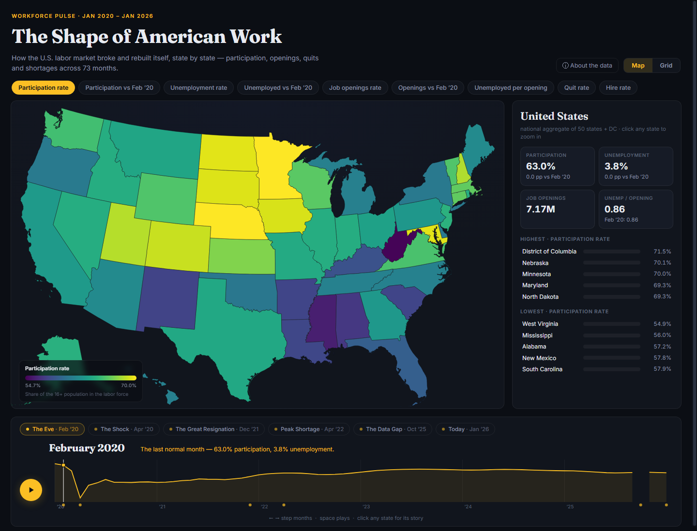

An interactive workforce atlas
A D3 atlas for exploring labor-market patterns over time and comparing states.
Project gallery
Screenshot from the published workforce atlas. 1 images. Select an image to view it full size.
{kind=link}

About this work
I built an interactive atlas that combines geographic and tile-map views with time controls and state comparisons.
The public application displays the January 2020 through January 2026 period, with source available alongside the demo.
Methods and project context
- JavaScript
- D3
- Data visualization
- Interactive maps
Labor-market patterns vary by geography and time, making a static chart insufficient for many comparisons.
- Represent the dataset in linked visual and geographic views.
- Use time controls to compare the displayed periods.
- Provide state-level comparisons through a browser interface.
Independent portfolio project
The displayed period is a dataset snapshot. The page is not represented as a continuously updated labor-market feed.